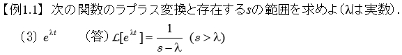

0.0.1 ［補足］「ラプラス変換が存在するsの範囲」も求める場合．

| (%i1) | f(t):= %e^(λ·t); |
| (%i2) | assume(T>0); |
| (%i3) |
/*ラプラス変換の定義式において，積分の上限∞をTと置きかえた場合*/ LT: integrate(f(t)·%e^(−s·t), t, 0, T) ; |
| (%i4) |
/*因数分解して，項をまとめる*/ LT2: factor(LT); |
| (%i5) |
/*上式の分子を展開する．*/ LT3: substpart(expand(piece), LT2, 1); |
| (%i6) |
/*上式の分子，分母の左右を交換する．*/ LT4: (substpart(expand(−piece), LT3, 1), substpart(expand(−piece), %%, 2)); |
| (%i7) |
/*上式の分子の指数部を手動で因数分解して置きかえる．*/ LT5: substpart(−%e^(−T·(s−λ)), LT4, 1, 2); |
| --> |
/*上式において，T→∞とした場合，(s-λ)>0であれば，積分は収束する． したがって，プラス変換が存在するsの範囲は，s>λである．【答え】*/; |
| --> | /*一応，LT5のT→∞の極限を調べると，(s>λの場合の式が，ラプラス変換した式である．)*/; |
| (%i8) |
/*s>0, λ>0, λ-s<0 (s>λ)の場合*/ limit(LT5, T, inf); /*「p」，「p」，「n」と答えること*/ |
| (%i9) |
/*s<0, λ<0, λ-s<0 (s>λ)の場合 (λ-s<0であれば，s<0,λ<0でも構わない．)*/ limit(LT5, T, inf); /*「n」，「n」，「n」，「n」と答えること*/ |
| (%i10) |
/*s>0, λ>0, λ-s>0 (s<λ)の場合 (積分が収束しない場合)*/ limit(LT5, T, inf); /*「p」，「p」，「p」と答えること*/ |
Created with wxMaxima.
The source of this Maxima session can be downloaded here.